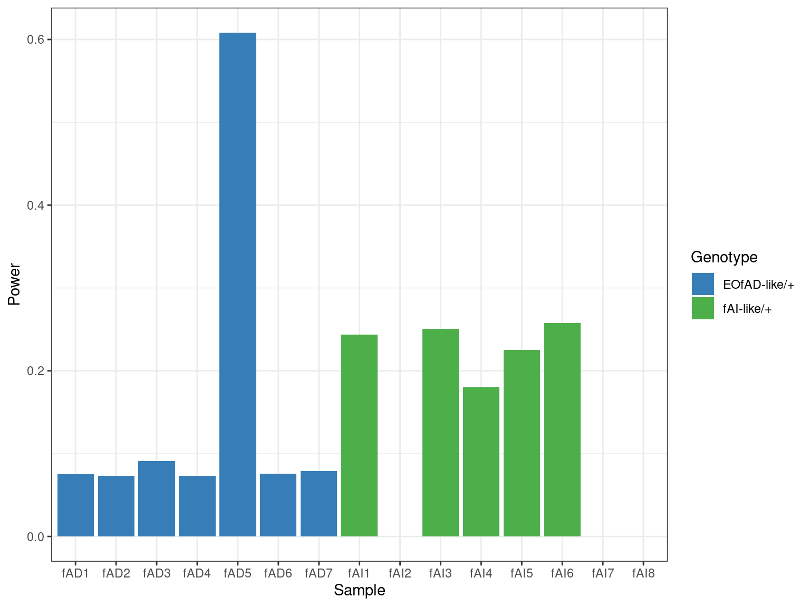
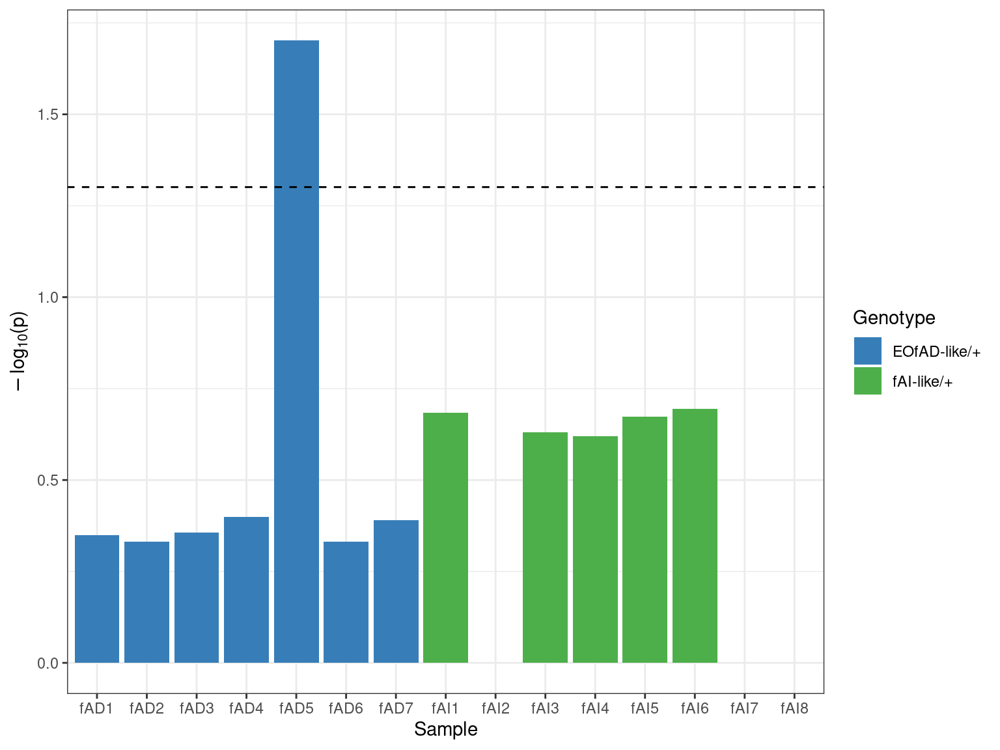
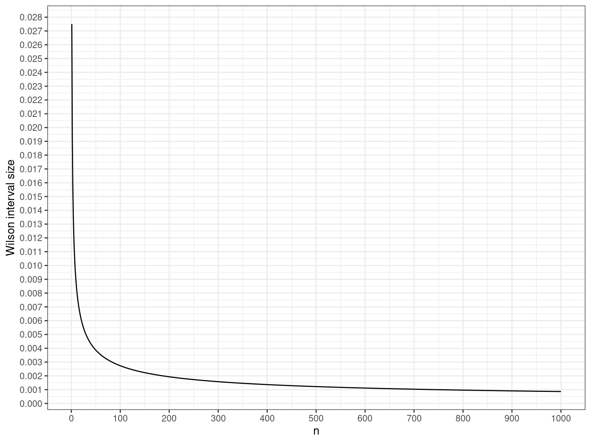
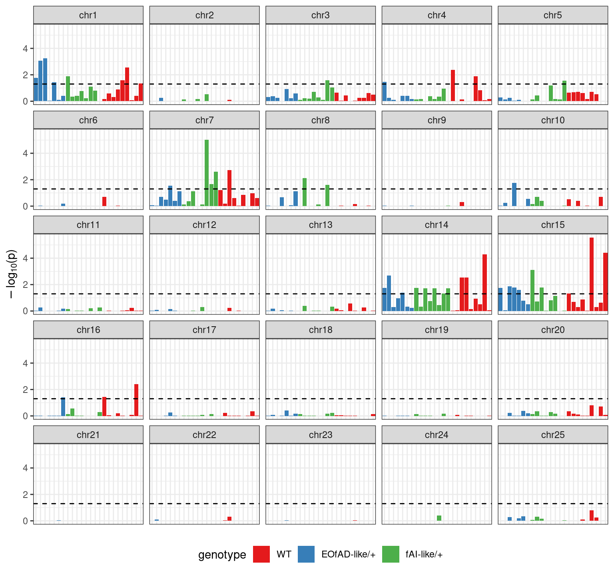
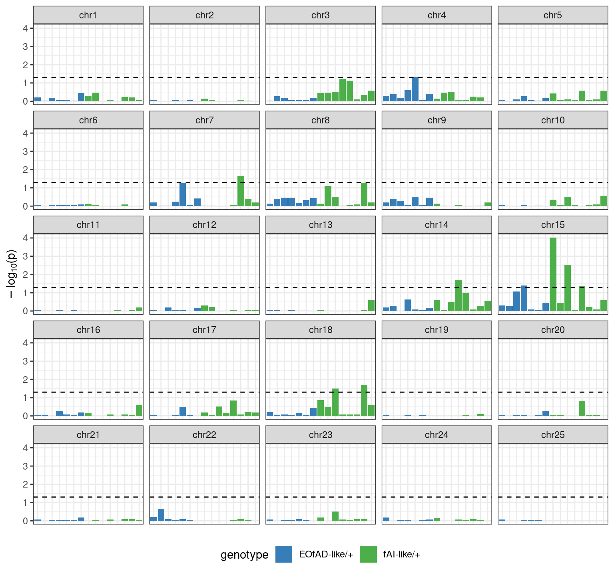

suppressPackageStartupMessages({
## Common
library(tidyverse)
library(magrittr)
library(future.apply)
library(here)
library(AnnotationHub)
library(purrr)
library(scales)
library(kableExtra)
library(tictoc)
library(ggrepel)
library(RColorBrewer)
library(ggpubr)
library(pander)
library(rmarkdown)
## Project specific
library(statmod)
library(fgsea)
})if (interactive()) setwd(here::here())
theme_set(theme_bw())
cores <- availableCores() - 2source(here("R/lbFuncs.R"))ah <- AnnotationHub() %>%
subset(species == "Danio rerio") %>%
subset(rdataclass == "EnsDb")
ensDb <- ah[["AH83189"]] ## Ens101
genes <- genes(ensDb)
mcols(genes) <- mcols(genes)[
c("gene_id", "gene_name", "gene_biotype", "entrezid")
]
exons <- exonsBy(ensDb, by = "gene")metadata <- read_csv(here("files/samples.csv")) %>%
dplyr::select(-sample) %>%
dplyr::rename(sample = basename, genotype = Genotype) %>%
## We need some sample aliases that follow R naming conventions
mutate(
alias = c(
paste0(rep("fAD", 7), seq(1, 7)),
paste0(rep("fAI", 8), seq(1, 8)),
paste0(rep("wt", 9), seq(1, 9))
)
)
metadata$genotype <- fct_relevel(
metadata$genotype,
c("WT", "EOfAD-like/+", "fAI-like/+")
)
genoCols <- metadata$genotype %>%
levels() %>%
length() %>%
brewer.pal("Set1") %>%
setNames(levels(metadata$genotype))
compCols <- genoCols[2:3]metadata %>%
dplyr::rename(
Sample = sample, `Fish ID` = fish_id, `Batch Killed` = batch_killed,
`Genotype 1` = genotype, `Genotype 2` = Genotype_2, Alias = alias
) %>%
kable(
align = "l",
caption = "Sample metadata"
) %>%
kable_styling(
bootstrap_options = c("striped", "hover", "condensed", "responsive")
)| Sample | Fish ID | Batch Killed | Sex | RINe | Genotype 1 | Genotype 2 | Alias |
|---|---|---|---|---|---|---|---|
| 7_KB_B12 | 27 | 6 | F | 9.3 | EOfAD-like/+ | T428del/+ | fAD1 |
| 22_KB_C6 | 30 | 7 | F | 9.6 | EOfAD-like/+ | T428del/+ | fAD2 |
| 16_KB_C12 | 40 | 8 | F | 9.4 | EOfAD-like/+ | T428del/+ | fAD3 |
| 8_KB_B3 | 46 | 9 | F | 9.2 | EOfAD-like/+ | T428del/+ | fAD4 |
| 19_KB_C3 | 29 | 6 | M | 9.5 | EOfAD-like/+ | T428del/+ | fAD5 |
| 10_KB_B6 | 50 | 9 | M | 9.3 | EOfAD-like/+ | T428del/+ | fAD6 |
| 4_KB_A6 | 9 | 3 | M | 9.0 | EOfAD-like/+ | T428del/+ | fAD7 |
| 2_KB_A11 | 12 | 4 | F | 8.7 | fAI-like/+ | W233fs/+ | fAI1 |
| 12_KB_B8 | 22 | 5 | F | 9.3 | fAI-like/+ | W233fs/+ | fAI2 |
| 15_KB_C11 | 45 | 9 | F | 9.4 | fAI-like/+ | W233fs/+ | fAI3 |
| 18_KB_C2 | 47 | 9 | F | 9.2 | fAI-like/+ | W233fs/+ | fAI4 |
| 9_KB_B5 | 21 | 4 | M | 9.4 | fAI-like/+ | W233fs/+ | fAI5 |
| 6_KB_B11 | 26 | 6 | M | 9.4 | fAI-like/+ | W233fs/+ | fAI6 |
| 24_KB_C8 | 44 | 9 | M | 9.8 | fAI-like/+ | W233fs/+ | fAI7 |
| 21_KB_C5 | 49 | 9 | M | 9.5 | fAI-like/+ | W233fs/+ | fAI8 |
| 5_KB_A7 | 19 | 4 | F | 9.1 | WT | WT | wt1 |
| 1_KB_A10 | 25 | 5 | F | 9.4 | WT | WT | wt2 |
| 23_KB_C7 | 36 | 7 | F | 9.7 | WT | WT | wt3 |
| 3_KB_A1 | 4 | 1 | F | 9.4 | WT | WT | wt4 |
| 17_KB_C1 | 34 | 7 | M | 9.0 | WT | WT | wt5 |
| 20_KB_C4 | 35 | 7 | M | 9.3 | WT | WT | wt6 |
| 14_KB_C10 | 37 | 8 | M | 9.3 | WT | WT | wt7 |
| 13_KB_B9 | 54 | 10 | M | 9.3 | WT | WT | wt8 |
| 11_KB_B7 | 55 | 10 | M | 9.1 | WT | WT | wt9 |
genotypes <- unique(metadata$genotype) %>%
as.vector() %>%
set_names(., .)
fad <- metadata$alias %>%
str_detect("fAD")
fai <- metadata$alias %>%
str_detect("fAI")
wt <- metadata$alias %>%
str_detect("WT")topDE <- readRDS(here("files/toptable_raw.rds")) %>%
set_names(c("fAD", "fAI"))files <- list.files(
"/hpcfs/users/a1647910/210408_psen1_fADfAI_snv/12_geneiase/ase",
full.names = TRUE
)
samples <- basename(files) %>%
str_remove(".static.pval.tsv")
drChrs <- seq(1:25)topASE <- lapply(files, function(x){
sample <- basename(x) %>%
str_remove(".static.pval.tsv")
read_tsv(x) %>%
mutate(
sig = fdr < 0.05,
sample = sample
) %>%
left_join(metadata[,c("sample", "alias", "genotype")]) %>%
dplyr::arrange(fdr) %>%
mutate(ASE = fdr < 0.05)
}) %>%
set_names(metadata$alias[match(samples, metadata$sample)]) %>%
.[metadata$alias]nASE <- sapply(topASE, function(x){
dplyr::filter(x, ASE) %>%
nrow()
})The first and most simple approach to testing for overall enrichment of DE genes showing ASE is Fisher’s exact test. 2x2 contingency tables were constructed for each mutant genotype (fAD and fAI). Genotype fAD showed 13 DE genes in comparison to WT, while genes presenting static ASE ranged from 850 to 1045 across 24 samples. Genotype fAI showed 5 DE genes in comparison to WT, while genes presenting static ASE ranged from 976 to 1180 across 24 samples.
fisherTabs <- topASE[str_detect(names(topASE), ("fAD|fAI"))] %>%
lapply(function(x){
geno <- unique(x$alias)
if (str_detect(geno, "fAD")) {
dat <- topDE$fAD[,c("gene_id", "DE")] %>%
left_join(x[,c("feat", "ASE")], by = c("gene_id" = "feat")) %>%
mutate(
DE = ifelse(DE == TRUE, "DE", "Not DE"),
ASE = ifelse(ASE == TRUE, "ASE", "No ASE"),
ASE = ifelse(is.na(ASE), "No ASE", ASE)
)
tab <- table(dat$DE, dat$ASE)
return(tab)
}
if (str_detect(geno, "fAI")) {
dat <- topDE$fAI[,c("gene_id", "DE")] %>%
left_join(x[,c("feat", "ASE")], by = c("gene_id" = "feat")) %>%
mutate(
DE = ifelse(DE == TRUE, "DE", "Not DE"),
ASE = ifelse(ASE == TRUE, "ASE", "No ASE"),
ASE = ifelse(is.na(ASE), "No ASE", ASE)
)
tab <- table(dat$DE, dat$ASE)
return(tab)
}
})Concerns with statistical power for Fisher’s exact test were assessed due to the small number of DE genes for both genotypes. This was performed with the power.fisher.test() function using 1000 simulations for each sample.
set.seed(17)
fisherSim <- sapply(fisherTabs, function(x){
p1 <- x[1,1] / (x[2,1])
n1 <- (x[1,1] + x[2,1])
p2 <- x[1,2] / (x[2,2])
n2 <- (x[1,2] + x[2,2])
power.fisher.test(p1, p2, n1, n2, alpha = 0.05, nsim = 1000)
})fisherSim %>%
enframe(name = "Sample", value = "Power") %>%
left_join(metadata, by = c("Sample" = "alias")) %>%
ggplot(aes(Sample, Power)) +
geom_bar(aes(fill = genotype), stat = "identity") +
scale_fill_manual(values = compCols) +
labs(fill = "Genotype")
Fisher’s exact test lacks power to detect enrichment of DE genes presenting ASE. The test was stil performed as an initial insight, but other methods must be considered to make proper conclusions.
fisherTest <- lapply(fisherTabs, fisher.test)
fisherP <- sapply(fisherTest, function(x){x$p.value})fisherP %>%
enframe(name = "Sample", value = "p") %>%
left_join(metadata, by = c("Sample" = "alias")) %>%
ggplot(aes(Sample, -log10(p))) +
geom_bar(aes(fill = genotype), stat = "identity") +
geom_hline(yintercept = -log10(0.05), linetype = "dashed") +
scale_fill_manual(values = compCols) +
labs(fill = "Genotype", y = log10plab)
chrGenes <- genes %>%
as_tibble() %>%
dplyr::filter(seqnames %in% drChrs) %>%
droplevels() %>%
split(.$seqnames) %>%
lapply(pull, gene_id) %>%
set_names(paste0("chr", names(.)))wilsonConf <- function(pvals, conf.level = 0.95){
p <- mean(pvals)
n <- length(pvals)
alpha <- 1 - conf.level
alpha2 <- 0.5 * alpha
z <- qnorm(1 - alpha2)
z2 <- z * z
p1 <- p + 0.5 * z2/n
p2 <- z * sqrt((p * (1 - p) + 0.25 * z2/n)/n)
p3 <- 1 + z2/n
lcl <- (p1 - p2)/p3
ucl <- (p1 + p2)/p3
res.wilson <- tibble(
mean = p,
conf = p2,
lower = lcl,
upper = ucl,
sig = mean < 0.05
)
return(res.wilson)
}intSizeByN <- lapply(seq(1:1000), function(n){
p <- 0.05
alpha <- 1 - p
alpha2 <- 0.5 * alpha
z <- qnorm(1 - alpha2)
z2 <- z * z
p1 <- p + 0.5 * z2/n
p2 <- z * sqrt((p * (1 - p) + 0.25 * z2/n)/n)
p3 <- 1 + z2/n
lcl <- (p1 - p2)/p3
ucl <- (p1 + p2)/p3
res.wilson <- tibble(
p = p,
n = n,
lower = lcl,
upper = ucl
)
return(res.wilson)
})
intSizeByN %>%
bind_rows() %>%
mutate(size = upper - lower) %>%
ggplot(aes(n, size)) +
geom_line() +
labs(y = "Wilson interval size") +
scale_y_continuous(breaks = seq(0, 0.03, by = 0.001)) +
scale_x_continuous(breaks = seq(0, 1000, by = 100))
permRanks_nd <- function(topASE){
topASE[,c("feat", "fdr")] %>%
mutate(
fdr = ifelse(fdr == 0, 0.000001, fdr),
stat = -log10(fdr)
) %>%
split(f = .$stat) %>%
lapply(function(x){
pull(x, feat) %>%
sample(length(.), replace = FALSE)
}) %>%
unlist(use.names = FALSE) %>%
enframe(name = NULL, value = "geneid") %>%
mutate(stat = seq(1:nrow(.))) %>%
with(structure(stat, names = geneid)) %>%
rev()
}perms <- 500
file_nd <- paste0(
"/hpcfs/users/a1647910/210408_psen1_fADfAI_snv",
"/files/fgsea_nd_",
perms,
"perms.Rds"
)## This code chunk has a lengthy run-time and will not run if the object has already been saved
## Due to its large size the object remains on the HPC system
## Across 6 threads it takes 1-2 hours to complete
if (!file.exists(file_nd)) {
plan(list(tweak(multisession, workers = cores), sequential))
ranks_nd <- future_sapply(1:perms, function(...){
future_sapply(topASE, permRanks_nd, future.seed = 17)
}, future.seed = 17) %>%
t() %>%
as_tibble()
fgsea_nd <- future_lapply(as.list(ranks_nd), function(x){
future_lapply(x, function(y){
fgseaMultilevel(chrGenes, y, scoreType = "pos", eps = 0)
}, future.seed = 17)
}, future.seed = 17) %>%
set_names(colnames(ranks_nd))
saveRDS(fgsea_nd, file_nd)
plan(sequential)
}fgsea_nd <- readRDS(file_nd)pvals_nd <- lapply(fgsea_nd, function(x){
lapply(seq_along(x), function(y){
x[[y]][,c("pathway", "padj")] %>%
dplyr::rename(!!as.character(y) := padj)
}) %>%
purrr::reduce(left_join) %>%
column_to_rownames("pathway") %>%
t() %>%
as_tibble()
})mean_nd <- lapply(pvals_nd, function(sample){
chrList <- as.list(sample)
lapply(seq_along(chrList), function(x){
chr <- names(chrList)[x]
wilsonConf(chrList[[x]]) %>%
mutate(chromosome = as.factor(chr))
}) %>%
bind_rows() %>%
dplyr::select(chromosome, everything())
}) lapply(seq_along(mean_nd), function(ind){
x <- mean_nd[[ind]]
x %>%
mutate(
sample = names(mean_nd)[ind],
chromosome = fct_relevel(chromosome, str_sort(chromosome, numeric = TRUE))
)
}) %>%
bind_rows() %>%
left_join(metadata[,c("alias", "genotype")], by = c("sample" = "alias")) %>%
ggplot(aes(sample, -log10(mean))) +
geom_bar(stat = "identity", aes(fill = genotype)) +
geom_hline(yintercept = -log10(0.05), linetype = "dashed") +
facet_wrap(~ chromosome) +
theme(
axis.text.x = element_blank(),
axis.ticks.x = element_blank(),
axis.title.x = element_blank(),
legend.position = "bottom"
) +
scale_fill_manual(values = genoCols) +
labs(y = log10plab)
permRanks_d <- function(topASE){
geno <- unique(topASE$alias)
if (str_detect(geno, "fAD")) {
dat <- topASE[,c("feat", "fdr")] %>%
left_join(
topDE$fAD[,c("gene_id", "logFC")],
by = c("feat" = "gene_id")
)
}
if (str_detect(geno, "fAI")) {
dat <- topASE[,c("feat", "fdr")] %>%
left_join(
topDE$fAI[,c("gene_id", "logFC")],
by = c("feat" = "gene_id")
)
}
dat %>%
mutate(
fdr = ifelse(fdr == 0, 0.000001, fdr),
stat = sign(logFC) * -log10(fdr)
) %>%
dplyr::arrange(stat) %>%
split(f = .$stat) %>%
lapply(function(x){
pull(x, feat) %>%
sample(length(.), replace = FALSE)
}) %>%
unlist(use.names = FALSE) %>%
enframe(name = NULL, value = "geneid") %>%
mutate(stat = seq(1:nrow(.))) %>%
with(structure(stat, names = geneid)) %>%
rev()
}perms <- 500
file_d <- paste0(
"/hpcfs/users/a1647910/210408_psen1_fADfAI_snv",
"/files/fgsea_d_",
perms,
"perms.Rds"
)## This code chunk has a lengthy run-time and will not run if the object has already been saved
## Due to its large size the object remains on the HPC system
## Across 6 threads it takes 1-2 hours to complete
if (!file.exists(file_d)) {
plan(list(tweak(multisession, workers = 6), sequential))
ranks_d <- future_sapply(1:perms, function(...){
future_sapply(
topASE[str_detect(names(topASE), "(fAD|fAI)")],
permRanks_d,
future.seed = 17
)
}, future.seed = 17) %>%
t() %>%
as_tibble()
fgsea_d <- future_lapply(as.list(ranks_d), function(x){
future_lapply(x, function(y){
fgseaMultilevel(chrGenes, y, scoreType = "pos", eps = 0)
}, future.seed = 17)
}, future.seed = 17) %>%
set_names(colnames(ranks_d))
saveRDS(fgsea_d, file_d)
plan(sequential)
}fgsea_d <- readRDS(file_d)pvals_d <- lapply(fgsea_d, function(x){
lapply(seq_along(x), function(y){
x[[y]][,c("pathway", "padj")] %>%
dplyr::rename(!!as.character(y) := padj)
}) %>%
purrr::reduce(left_join) %>%
column_to_rownames("pathway") %>%
t() %>%
as_tibble()
})mean_d <- lapply(pvals_d, function(sample){
chrList <- as.list(sample)
lapply(seq_along(chrList), function(x){
chr <- names(chrList)[x]
wilsonConf(chrList[[x]]) %>%
mutate(chromosome = as.factor(chr))
}) %>%
bind_rows() %>%
dplyr::select(chromosome, everything())
}) lapply(seq_along(mean_d), function(ind){
x <- mean_d[[ind]]
x %>%
mutate(
sample = names(mean_d)[ind],
chromosome = fct_relevel(chromosome, str_sort(chromosome, numeric = TRUE))
)
}) %>%
bind_rows() %>%
left_join(metadata[,c("alias", "genotype")], by = c("sample" = "alias")) %>%
ggplot(aes(sample, -log10(mean))) +
geom_bar(stat = "identity", aes(fill = genotype)) +
geom_hline(yintercept = -log10(0.05), linetype = "dashed") +
facet_wrap(~ chromosome) +
theme(
axis.text.x = element_blank(),
axis.ticks.x = element_blank(),
axis.title.x = element_blank(),
legend.position = "bottom"
) +
scale_fill_manual(values = compCols) +
labs(y = log10plab)
chrGenes_df <- chrGenes %>%
lapply(list) %>%
as_tibble() %>%
pivot_longer(cols = everything(), names_to = "chr", values_to= "feat") %>%
unnest(feat)## Give number of samples showing ASE for each gene
aseByGene <- lapply(topASE, dplyr::filter, ASE) %>%
bind_rows() %>%
mutate(genoAlias = case_when(
str_detect(alias, "fAD") ~ "fAD",
str_detect(alias, "fAI") ~ "fAI",
str_detect(alias, "wt") ~ "WT",
)) %>%
group_by(feat, genoAlias) %>%
tally() %>%
ungroup() %>%
pivot_wider(names_from = genoAlias, values_from = n, values_fill = 0) %>%
left_join(chrGenes_df)## Gives number of genes showingASE in at least 1 sample
aseByChr <- sapply(c("fAD", "fAI", "WT"), function(geno){
aseByGene %>%
dplyr::filter(!!sym(geno) != 0) %>%
group_by(chr) %>%
tally(name = geno) %>%
arrange(desc(!!sym(geno)))
}, simplify = FALSE)noAseByGene <- lapply(topASE, dplyr::filter, !ASE) %>%
bind_rows() %>%
mutate(genoAlias = case_when(
str_detect(alias, "fAD") ~ "fAD",
str_detect(alias, "fAI") ~ "fAI",
str_detect(alias, "wt") ~ "WT",
)) %>%
group_by(feat, genoAlias) %>%
tally() %>%
ungroup() %>%
pivot_wider(names_from = genoAlias, values_from = n, values_fill = 0) %>%
left_join(chrGenes_df)